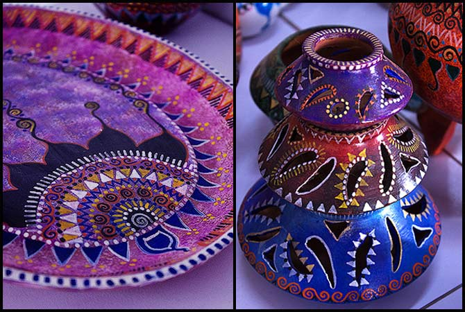

Festivals in Pakistan reflect the country's rich cultural diversity and religious traditions, celebrated with great enthusiasm nationwide. Islamic festivals like Eid-ul-Fitr and Eid-ul-Adha are widely observed, featuring communal prayers, charity, and festive meals.Milad-un-Nabi marks the birth of Prophet Muhammad (PBUH), while Ashura is particularly significant for the Shia community, commemorating Imam Hussain's martyrdom. Cultural celebrations include Basant, a lively spring festival known for its vibrant kite-flying in Lahore, and Independence Day on August 14, marked by patriotic displays and parades. Nowruz, celebrated by Persian-speaking communities, welcomes the Persian New Year with traditional festivities. Religious minorities also observe Christmas and Easter with church services and communal gatherings, while Hindus celebrate Diwali and Holi with colorful rituals. Additionally, the Urs festivals, held at Sufi shrines, draw devotees who engage in spiritual practices and celebrate the mystic traditions of Pakistan. These festivals, whether religious, cultural, or seasonal, unite communities and highlight Pakistan's shared heritage and vibrant traditions.
The founding of Pakistan is a story of visionary leaders whose dedication and sacrifices laid the foundation for a new nation. Quaid-e-Azam Muhammad Ali Jinnah, the chief architect of Pakistan, led the struggle for independence with unparalleled resolve, advocating for the rights of Muslims in the subcontinent and ultimately securing a separate homeland. His close associate, Liaquat Ali Khan, played a crucial role as Pakistan's first Prime Minister, guiding the nascent state through its formative years. Allama Iqbal, the philosopher-poet, inspired the idea of a separate Muslim state with his poetic vision and intellectual discourse, laying the ideological groundwork for Pakistan. Fatima Jinnah, affectionately known as the "Mother of the Nation," stood steadfastly beside her brother, Jinnah, and played a vital role in mobilizing women and advocating for social and political rights. Sir Syed Ahmad Khan, although earlier in the timeline, was a key precursor whose efforts in promoting education and modern thought among Muslims paved the way for the intellectual and political awakening that led to Pakistan's creation. Bi Amma, the mother of Ali brothers (Maulana Muhammad Ali and Shaukat Ali), is remembered for her unwavering support for the independence movement and for inspiring Muslim women to join the struggle. These leaders, along with many others, formed a coalition of visionaries who, through their tireless efforts, turned the dream of Pakistan into a reality.


The history of Pakistan is a tale of resilience, struggle, and the quest for identity that spans over centuries, culminating in the creation of a sovereign state in 1947. The roots of Pakistan's history trace back to the ancient civilizations of the Indus Valley, one of the world's earliest urban cultures, which thrived around 2500 BCE. Over the centuries, the region saw the rise and fall of various empires, including the Maurya, Gupta, and Mughal empires, each contributing to the rich cultural and religious tapestry of the subcontinent. The arrival of Islam in the 8th century, particularly during the Mughal era, profoundly influenced the region's culture and identity.The modern history of Pakistan begins with the decline of the Mughal Empire and the rise of British colonial rule in the 18th century. The Indian subcontinent, under British domination, witnessed significant political and social changes. The struggle for independence grew throughout the 19th and early 20th centuries, with the All India Muslim League emerging as a pivotal force advocating for the rights of Muslims under the leadership of figures like Sir Syed Ahmad Khan, who emphasized education and reform. The demand for a separate Muslim state was formally articulated by Allama Iqbal in 1930 and furthered by Muhammad Ali Jinnah, who led the Muslim League in the Lahore Resolution of 1940, calling for the creation of Pakistan.After years of negotiations, communal tensions, and political struggle, the British government agreed to partition India. On August 14, 1947, Pakistan emerged as an independent nation, comprising West Pakistan (modern-day Pakistan) and East Pakistan (now Bangladesh). The early years were marked by challenges, including the partition's massive migration, communal violence, and the need to build a new state from scratch. Pakistan adopted its first constitution in 1956, becoming an Islamic Republic, but political instability and military interventions characterized much of its subsequent history. The secession of East Pakistan in 1971, leading to the formation of Bangladesh, was a significant event that reshaped the nation's trajectory. Despite these challenges, Pakistan has continued to evolve, navigating periods of military rule and democratic governance, while playing a crucial role in regional and international affairs. Today, Pakistan stands as a resilient nation, reflecting a complex history of struggle, survival, and growth, with its identity deeply rooted in the values that inspired its creation.